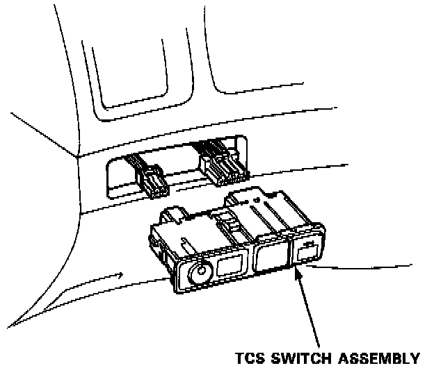
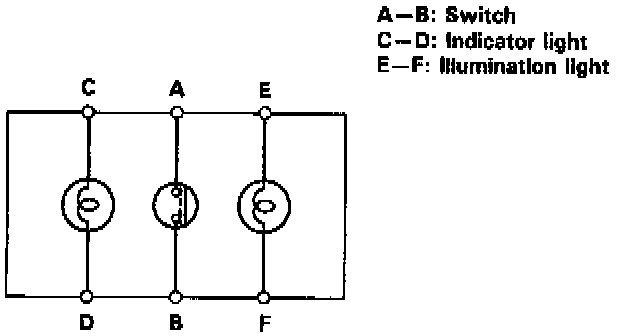
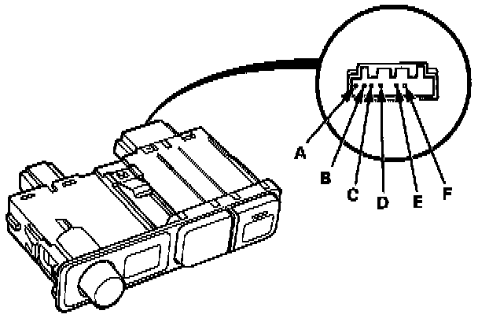

Traction Control Switch: Testing and Inspection



Remove the TCS switch assembly from the dashboard lower cover.
There should be continuity between the A and B terminals when the switch is pushed and there should be no continuity when the switch is released.
There should be continuity between the C and D terminals, and between the E and F terminals at all time.